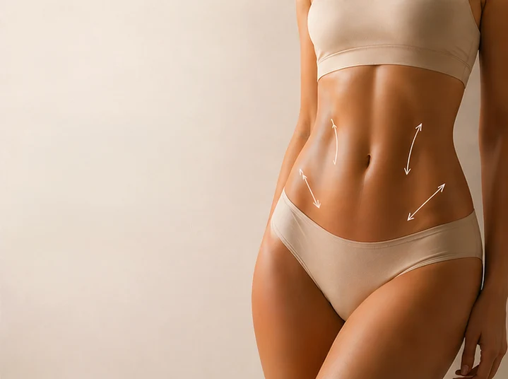

Contorno Corporal
de Alta Definição
Lipo HD com tecnologias VASER e Renuvion para definição natural.
Conhecer Lipo HDSelecione abaixo para conhecer o planejamento, a técnica e agendar sua avaliação individualizada.
Lipo HD com tecnologias VASER e Renuvion para definição natural.
Conhecer Lipo HDPrótese, mastopexia ou explante com planejamento individual.
Conhecer Cirurgia Mamária
Correção de diástase e definição muscular natural.
Conhecer Abdominoplastia HD RAFT